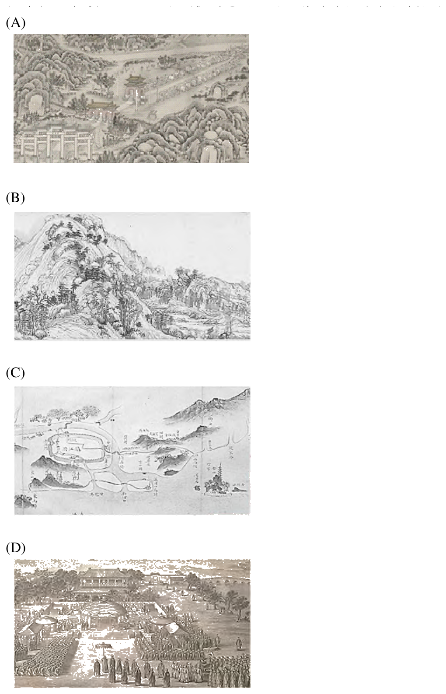

112 年教師檢定特教身障・國語文能力測驗試題與答案
這一頁是民國 112 年教師檢定特教身障・國語文能力測驗的整份歷屆試題，共 25 題，題目與標準答案出自教育部教師資格考試歷屆試題（受託國立臺灣師範大學心理與教育測驗研究發展中心），其中 25 題附有詳解。以下逐題列出題幹、選項與答案；要計時作答或記錄成績，請用線上練習。
教育部原始場次代碼：tqa11221
線上作答這一科 →
全部 25 題
第 1 題
根據本文，下列何者最可能為《乾隆南巡紀程圖》所收錄的資料？
- （A）乾隆出巡過程的各種故事
- （B）乾隆沿途撰寫的個人詩作
- （C）各地都城的洪汛防災設施
- （D）各地官員上貢的禮品項目
答案：（C）
詳解與考點
正解：文中明確指出「《乾隆南巡紀程圖》中即介紹衙署城池、山川名勝、水利設施及駐蹕位置，圖後文字則記載各站距離、地方沿革等」，可知圖冊實際收錄的內容以行政路線與沿途概況為主，其中「水利設施」一項即對應各地的洪汛防災設施——乾隆歷次南巡的重要目的之一正是巡視河工海塘（黃河、運河及浙江海塘等水利防洪工程），故此圖冊收錄各地水利防洪設施的可能性最高，選（C）。
A：（A）「出巡過程的各種故事」偏向軼事趣聞，但文中說明紀程圖收錄的是衙署城池、山川名勝、水利設施、駐蹕位置及各站距離、地方沿革等行政性、地理性資料，並未提及記載旅途中的故事情節，故不符文中所述內容。
B：（B）「沿途撰寫的個人詩作」屬乾隆個人文學創作，文中並未提及紀程圖收錄詩作，且乾隆御製詩文通常另外收於御製詩文集，與紀程圖偏重路線行程、地理沿革的行政記錄性質不同。
D：（D）「各地官員上貢的禮品項目」屬進貢事務記錄，文中所述紀程圖內容聚焦於路程、城池、山川、水利與駐蹕地點，並未涉及禮品進貢事宜，與文中描述不符。
本題考點：文本細節的定位與擷取。解題關鍵在準確定位文中對《乾隆南巡紀程圖》內容的直接描述句（「衙署城池、山川名勝、水利設施及駐蹕位置」），再將選項與文中列舉的項目逐一比對，選出文中確有提及、且最貼近該項目性質的選項，而非依常識推測或聯想文外的內容。
第 2 題
根據本文，下列對乾隆第一次南巡的描述何者正確？
- （A）由乾隆皇欽定，嚮導官員無法預知
- （B）體察風土民情，同時具備政治意義
- （C）長途陸路為主，沿途巡查各地軍防
- （D）主要由西向東，最後抵達浙江錢塘
答案：（B）
詳解與考點
正解：乾隆歷次南巡的路線規劃相當縝密——文中所述《乾隆南巡紀程圖》詳載沿途「衙署城池、山川名勝、水利設施及駐蹕位置」，可見南巡兼具巡視河工水利、勘察地方治理狀況、體察江南風土民情等實質內容；而如此大張旗鼓、地方大臣須事先與嚮導處官員擬定路程並繪圖呈覽的排場，本身也具有藉出巡展現皇帝勤政愛民、籠絡江南仕紳、鞏固統治威望的政治意涵。故「體察風土民情，同時具備政治意義」最符合乾隆第一次南巡的性質，答案為B。
A：由乾隆皇欽定，嚮導官員無法預知——文中明言「凡御道經臨之處，地方大臣須與嚮導處官員擬好路程並繪圖呈覽」，可見路線是由地方大臣與嚮導處官員事先擬定並繪製成圖、呈交御覽，嚮導官員理應早已參與規劃、知悉路線，並非全然無法預知，此選項與文中記載的規劃流程相反。
C：長途陸路為主，沿途巡查各地軍防——文中明確記載南巡路線「大多由運河經徐州、揚州、鎮江、常州與蘇州貫穿到浙江錢塘」，是以運河水路為主要交通方式，並非長途陸路；文中也未提及沿途巡查軍事防務的內容。
D：主要由西向東，最後抵達浙江錢塘——文中記載路線「自直隸、山東起」，一路南下經徐州、揚州、鎮江、常州、蘇州，最終抵達浙江錢塘，整體走向是由北向南沿運河南下，而非由西向東，此選項對行進方向的描述有誤。
本題考點：清代乾隆南巡的性質與《乾隆南巡紀程圖》的史料特性。乾隆南巡兼具巡視河工水利、體察地方民情、展現勤政形象以鞏固統治等多重政治與治理意涵；解題須留意文中關於路線規劃流程、交通方式與行進方向的具體記載，逐一檢驗選項是否與史料相符。
第 3 題
關於《乾隆南巡紀程圖》的版式說明何者正確？
- （A）為了方便攜帶，將十八冊合訂為一本
- （B）為了方便查考，製成圖文對照的形式
- （C）除了平裝正本，也有巾箱版的複刻本
- （D）為了閱讀方便，內容大多以文字為主
答案：（B）
詳解與考點
正解：文中明確指出「《乾隆南巡紀程圖》中即介紹衙署城池、山川名勝、水利設施及駐蹕位置，圖後文字則記載各站距離、地方沿革等」，可知此圖冊以地圖為主，圖後另附文字說明沿途距離與地方沿革，屬圖文對照的形式，方便查考行程細節，故選B。
A：文中說明此圖冊「共十八站，一站一圖……共分為十八冊」，是分裝為十八冊，並非為求攜帶方便而合訂為一本，與A所述相反。
C：文中提到此圖冊本身「被製成易於攜帶的袖珍本」，此類小尺寸書籍即為文中所稱的「巾箱本」（明清之後改稱袖珍本），亦即整套圖冊本身就是以巾箱本、袖珍本形式製作，並非「另有」一份平裝正本再搭配巾箱版複刻本兩種版本並存，C將單一版式誤植為兩種版本並存，與文意不符。
D：文中已說明此圖冊以「圖」為主體，文字僅是圖後附加的距離、沿革說明，與D所稱「內容大多以文字為主」直接相反，也與書名本身標榜「紀程圖」的性質矛盾。
本題考點：史料文本中版式細節的精確查考。作答時須逐一核對選項描述與原文用語（分冊方式、圖文比重、版式名稱）是否吻合，尤須留意選項將原文單一事實拆解或重組後製造的似是而非敘述（如把「本身即為巾箱本」誤植為「正本外另有複刻本」）。
第 4 題
關於文中第二段，駐「蹕」的解釋，下列何者正確？
- （A）古代帝王出行時止宿的地方
- （B）指當日最後一位駐守的衛士
- （C）指官員晉見時所站立的位置
- （D）古代五家為一組的地方組織
答案：（A）
詳解與考點
正解：「蹕」指帝王出行時清道戒嚴、駐留止宿之處，「駐蹕」即古代帝王出巡途中暫時停留、止宿的地方；文中提及《乾隆南巡紀程圖》繪有「駐蹕位置」，正是標示皇帝沿途停留過夜之處，此為歷史文獻中常見的專有用法，故選（A）。
B：「指當日最後一位駐守的衛士」是對「駐」字望文生義所杜撰的定義，「蹕」字本身與衛士的駐守順序無關，文中亦無相關描述可資佐證。
C：「指官員晉見時所站立的位置」同樣是無根據的杜撰說法，「蹕」指的是帝王本人出行止宿之處，而非官員晉見的站位，兩者性質不同。
D：「古代五家為一組的地方組織」描述的其實是古代戶籍鄉里編制之概念，屬另一組古代行政制度用語，與帝王出巡駐留的「蹕」字義並非同一範疇，容易因同屬「古代制度用語」而混淆。
本題考點：文言詞語的本義判讀與題組本文的定位技巧。解題關鍵在於先從文中「駐蹕位置」的語境判斷詞義範疇（與皇帝出巡相關），再以「蹕」字本義（帝王出行止宿之處）排除望文生義或無關古代制度的杜撰選項。
第 5 題
根據本文對《乾隆南巡紀程圖》特色的描述，請判斷下列何者為套圖的內容？

本題選項為上圖中的 A／B／C／D，請對照圖片作答。
答案：（C）
詳解與考點
正解：本文說《乾隆南巡紀程圖》介紹「衙署城池、山川名勝、水利設施及駐蹕位置」，圖後文字記載各站距離與地方沿革，且一站一圖、構圖樸素、設色淡雅。合乎這些特徵的是那幅畫面上有城池的方形輪廓與城門、有貫穿全圖的運河水道與兩側低矮山巒，並在各處密布小字標註地名位置的圖——它是為南巡行前規畫而繪、可據以查對路程的實用圖冊，構圖與設色也都樸素淡雅，故選（C）。
A：畫面是著色較濃、樓閣林木層疊的行旅遊賞場景，重在描繪景致的華美，既沒有城池衙署的方位標示，也沒有標註地名的小字，與「構圖樸素、設色淡雅」及記錄路程位置的性質都不合。
B：畫面是純粹的山水，只有山巒林木與雲氣，既無城池與水利設施，也無任何文字註記，屬於供欣賞的畫作，不是可供查對站點與距離的紀程圖。
D：畫面描繪大批人員列隊、儀仗齊備的宮苑典禮場面，記錄的是某一次事件的盛況，屬紀事性的場面畫；本文所述紀程圖的功能是預先呈覽御道所經的城池山川與駐蹕位置，兩者性質不同。
本題考點：說明文的細節判讀與圖文對應。作答關鍵在於先從文中抓出被說明對象的具體特徵——記錄內容（衙署城池、山川名勝、水利設施、駐蹕位置）、形式（一站一圖、構圖樸素、設色淡雅、袖珍本）、用途（南巡前的行程規畫呈覽）——再逐一拿這些特徵檢核每幅圖像，而不是憑「看起來像古畫」的直覺選答。
第 6 題
關於作者祖父(阿公)的真實生平，下列敘述何者正確？
- （A）祖父中年轉行，先務農之後養魚
- （B）祖父不識中文，故重視子孫教育
- （C）祖父造福桑梓，優先於照顧家庭
- （D）祖父過於操勞，故比祖母早離世
答案：（B）
詳解與考點
正解：文中括號內屬作者親筆的家書段落明確寫道：「您常說您不識字，不認識路，所以叫我要好好讀書。阿公，我知道您不是不識字，讀的是日本書。」可見祖父其實識字，只是讀的是日文書，並不識中文；正因如此，他常以「不識字」勸勉孫輩要好好讀書，這正是他重視子孫教育的真實原因，故選B。
A：祭文套語提到「於山林間，種植果樹」，作者的家書段落又提到「回到七股海邊，會親自下魚塭撈螃蟹和草蝦」，兩者看似可拼湊出「先務農後養魚」的職業轉換順序，但前者是禮儀公司套用的罐頭祭文，並非作者本人記述的真實生平；下魚塭捕撈屬童年回憶場景，文中並未交代祖父職業由農轉漁的具體時序，A屬過度推論。
C：「造橋鋪路，熱心鄉里，躬先表率」同樣是禮儀公司套用的制式祭文用語，而非作者親筆記述的真實生平；反觀作者親筆的家書段落，反覆描寫祖父對孫輩的疼愛與不捨（送到門口捨不得孫子離開、記得誰還沒吃到蛋糕），顯示祖父對家庭的重視絲毫未曾被犧牲，並無「造福桑梓優先於照顧家庭」的證據，C不成立。
D：文末家書寫道「我們會好好孝順祖母」，暗示祖母仍在人世、祖父確實先於祖母離世，這點或許為真；但「過於操勞」是制式祭文慣用的溢美之詞，文中並未提供祖父操勞致死的具體敘述或因果證據，把死因直接歸給操勞屬無據臆測，D不成立。
本題考點：題組閱讀中「敘事者真實回憶」與「制式文本（罐頭祭文）」的區辨。作答時須先辨識文中哪些段落是作者親筆的真情實感（括號內的家書段落），哪些是被禮儀師誤用、與真實生平無關的套版文字，再從真實敘述中比對選項是否有文本依據。
第 7 題
作者在現場感到尷尬的原因為何？
- （A）假哭腔令人發噱
- （B）禮儀師弄錯場子
- （C）樂音嘈雜像鬧市
- （D）聽到突兀的祭文
答案：（D）
詳解與考點
正解：文中作者原本親筆寫下充滿具體回憶與真情的祭文（如括號內的段落所示），交由禮儀公司後，禮儀師卻認為那篇「樣子都不對、不像祭文」，逕自替換成一篇制式八股、套語連篇的祭文（如「篳路藍縷」「造橋鋪路」「羽化登仙」等），誦讀出的內容與現場情境、與作者親身的阿公形象完全脫節，才使作者聽了「連自己的阿公是誰都搞不清楚」，這種與真實場合、真實情感格格不入的突兀感，正是尷尬的根源，故選D「聽到突兀的祭文」。
A：「假哭腔令人發噱」誤把尷尬的原因歸於誦讀時的哭腔表演本身逗趣，但文中真正引發尷尬的並非哭腔的音調，而是祭文內容套語空泛、與作者真實回憶脫節。
B：「禮儀師弄錯場子」屬於場合認知錯誤的臆測，文中並未描述禮儀師走錯場地或搞混告別式對象，衝突點在於祭文「內容」被替換，而非「場合」本身出錯。
C：「樂音嘈雜像鬧市」聚焦環境聲響的紛雜，文中雖提及嘈雜的樂音作為場景鋪陳，但這並非作者事後向禮儀公司詢問、耿耿於懷的癥結所在，真正的癥結在祭文內容本身。
本題考點：記敘文中情緒轉折原因的辨析。作答關鍵是區分文中鋪陳的背景元素（如嘈雜的樂音、誦念的哭腔）與真正導致情緒轉折的核心事件（祭文內容被制式套語取代、與作者原稿及真實回憶脫節），並以文末作者主動詢問禮儀公司、揭曉真相的段落作為驗證線索。
第 8 題
禮儀師不採用作者所寫的祭文，下列何者是最不可能的原因？
- （A）用字遣詞太口語化
- （B）文字缺乏細節與情感
- （C）未使用莊重的四言句式
- （D）看不到傳統祭文專用詞彙
答案：（B）
詳解與考點
正解：禮儀師之所以不採用作者自己撰寫的祭文，是因為它不符合正式祭文的形式規範——用字過於口語、未依循莊重的四言句式、也缺乏傳統祭文慣用的專門詞彙，這些都屬於「形式」層面的落差，對應選項A、C、D。相對地，作者出於對至親的追念而親筆寫下的文字，字裡行間穿插對阿公具體生活細節與情感的回憶（如七股海邊撈螃蟹、切蛋糕總先問誰沒吃到等），內容富含真摯的細節與情感，這正是自撰文字相對於制式範本的價值所在，因此「文字缺乏細節與情感」反而最不可能是禮儀師拒用的原因，故選（B）。
A：（A）「用字遣詞太口語化」——文中作者對阿公的追憶以口語書寫，確實不符合祭文莊重典雅的文體要求，是禮儀師可能拒用的合理原因之一。
C：（C）「未使用莊重的四言句式」——傳統祭文常以四字一句的莊重句式書寫，作者原文夾雜大量口語化的長短句與括號內的私語，與四言句式的規範不符，是合理拒用原因。
D：（D）「看不到傳統祭文專用詞彙」——傳統祭文慣用「嗚呼」「伏維」「尚饗」等固定詞彙與套語，若作者原文欠缺此類專用詞彙，也會被視為「不像祭文」，是合理拒用原因。
本題考點：文體規範與文章內容價值的區辨。題目要求判斷「最不可能」的原因，須從文中禮儀師實際拒用的判準反推：拒用原因指向形式不合規範（口語化、非四言、缺專用詞彙），而非內容本身的情感真摯度；解題關鍵在辨明「形式瑕疵」與「內容價值」屬於不同層次的判準。
第 9 題
作者將兩則祭文交錯呈現，產生什麼閱讀效果？
- （A）增添誦讀祭文時的哀戚感
- （B）作為閱讀祭文的訊息補充
- （C）提供文言與白話的翻譯解釋
- （D）利用內容對照引發讀者思考
答案：（D）
詳解與考點
正解：文中禮儀師誦讀的祭文以誇飾、制式化的文言套語堆砌，與括號中作者自己以白話口吻寫下、充滿具體生活細節的真摯回憶（如撈螃蟹草蝦、切蛋糕忘了自己還沒吃等）兩相穿插並陳。這種交錯安排讓制式化的官樣文字與個人真情實感在同一版面形成強烈對比，促使讀者在閱讀過程中自行比較、思索制式祭文的空泛套語與具體而真摯的個人記憶之間的落差，進而反思制式化儀式語言可能掏空個人情感真實性的問題，這正是D「利用內容對照引發讀者思考」所指的效果，故選D。
A：兩則祭文交錯呈現的效果並非單純渲染哀戚氣氛。文中作者明白寫道自己「越聽越尷尬，幾乎要笑出來」，顯示制式祭文誦讀出來的實際效果非但沒有增添哀戚感，反而因空洞失真而令人啼笑皆非，與「增添哀戚感」的說法相反。
B：兩則祭文並非主從互補、由一方補充另一方訊息的關係，而是各自獨立、內容取向截然不同的並列對照；若視為訊息補充，等於預設兩者共同拼湊出同一完整敘事，但文中恰恰凸顯兩者在內容與情感真實度上的斷裂，而非互補。
C：制式祭文本身即以中文書寫，括號中的白話回憶也不是制式祭文文言字句的逐句語譯，兩者是內容取向不同的兩種文本並列，而非同一內容以文言、白話兩種語體對照翻譯的關係。
本題考點：文本並置作為修辭手法所引發的閱讀效果。解題關鍵在辨識作者刻意安排兩種性質不同的文字交錯呈現，其目的通常是藉由內容反差製造張力，促使讀者對照、反思兩者所代表的價值或情感差異，而非渲染情緒或提供資訊互補。
第 10 題
下列何者最可能是本文主要的寫作意圖？
- （A）傳達對制式應用文書的諷刺
- （B）使讀者辨別古今祭文的差異
- （C）讓親友明白作者的思念之情
- （D）稱頌禮儀師隨機應變的做法
答案：（A）
詳解與考點
正解：全文以禮儀師拒用作者自撰的祭文、改採制式範本這段經歷為主軸，並透過括號中作者原文與禮儀師誦唸出的制式祭文兩相對照，凸顯制式應用文書空洞、套語化，充滿「嗚呼」「伏維」「尚饗」等罐頭詞句，反而讓真正承載記憶與情感的文字被抹去、連「那是誰的阿公」都認不出來；文末作者向禮儀公司詢問，得到的回覆是「我們有我們的SOP」，更點出制式化流程凌駕於個人真實情感表達之上的問題，全文寫作意圖偏向對這類制式應用文書提出反思與諷刺，故選（A）。
B：（B）「使讀者辨別古今祭文的差異」把文章目的窄化為單純的語言形式知識性說明，但文中反覆對照的重點在於「情感真偽」而非「古今用語」的差異，並非全文鋪陳的核心用意。
C：（C）「讓親友明白作者的思念之情」只是作者原本撰寫祭文這個動作本身的表層動機，但全文真正著墨的是這份思念之情如何被禮儀師以SOP拒收、替換成制式範本的過程，思念本身並非全文透過情節對照所要凸顯的寫作意圖。
D：（D）「稱頌禮儀師隨機應變的做法」與文中情節相反──禮儀師堅持採用制式範本、拒絕作者版本的祭文，並非隨機應變，而是機械化套用SOP，故不成立。
本題考點：文章寫作意圖的判讀。須從情節安排（原文與制式範本對照、SOP回應）與敘事語氣（尷尬、想哭卻又想笑的矛盾情緒）中歸納作者真正要傳達的核心關懷，而非停留在表層動機或單一情節細節。
第 11 題
對於〈梅花湯餅〉的敘述，下列何者有誤？
- （A）以花命名的料理
- （B）當中沒有包餡料
- （C）食材以梅花為主
- （D）梅花狀的餛餠皮
答案：（C）
詳解與考點
正解：由本文所引《山家清供》原文可知，〈梅花湯餅〉的作法是先以白梅、檀香末浸水調味，再用此水和麵，製成餛飩皮狀的麵糰，接著以鐵製模具鑿成梅花形狀，煮熟後盛入雞清汁中食用。可見此菜餚構成份量的主要食材其實是麵粉，白梅只用於浸泡調香水以增添氣味，並非構成菜餚主體的食材，故選項C「食材以梅花為主」的敘述與原文不符，為本題所求之有誤敘述，答案為（C）。
A：（A）以花命名的料理，敘述正確。此菜因以模具鑿成梅花形狀而得名「梅花湯餅」，屬以花命名的雅稱，符合《山家清供》為菜餚賦予雅稱的整體特色。
B：（B）當中沒有包餡料，敘述正確。原文僅述「和麵作餛飩皮」，以浸過梅香水的麵糰鑿成梅花片狀後直接煮熟，並無記載內包任何餡料，作法近於實心麵片而非包餡的餛飩。
D：（D）梅花狀的餛飩皮，敘述正確。原文明言「用五分鐵鑿如梅花樣者，鑿取之」，即以鐵鑿將麵皮鑿成梅花形狀，形狀確實仿照餛飩皮而製成梅花片狀，與原文相符。
本題考點：文言文本細節的精確理解與命題陷阱辨析。解題關鍵在於區辨「用於調香增味的材料」與「構成菜餚主體份量的材料」，白梅在本文中僅用於浸水調香，麵粉才是實際構成湯餅主體的食材，讀者須避免僅因菜名或部分文字提及某物，便誤判其為主要材料。
第 12 題
文中「恍如孤山下，飛玉浮西湖」一句是如何深化人們的飲食感受？
- （A）因菜餚樣貌引發發景物的聯想
- （B）將食物口感轉化為具體景色
- （C）就眼前景色引起味覺的審美
- （D）描繪景物以達到情感的昇華
答案：（A）
詳解與考點
正解：〈梅花湯餅〉一則描述以梅花形鐵模將麵皮鑿成梅花瓣，再入雞清湯烹煮，湯麵上浮著片片潔白的梅花狀麵皮；留元剛所引「恍如孤山下，飛玉浮西湖」，即是把眼前這道菜餚的視覺樣貌（白色花瓣浮於湯汁）比擬為西湖孤山一帶飛雪浮湖的景致。也就是說，是先有菜餚本身的樣貌（形似梅花、浮於湯中），才引發讀者或食客對孤山、西湖此一特定景物的聯想，藉由詩詞意境把單純的視覺印象提升為文化意境，深化了飲食的感受，故選（A）。
B：此句經營的是「以景物比擬菜餚樣貌」的視覺聯想，並未涉及咀嚼、滋味等口感描寫，選項卻說是把「口感」轉化為景色，混淆了口感與樣貌兩種感官層次，方向有誤。
C：此句是由菜餚的樣貌引發對孤山西湖之景的聯想，選項卻把因果順序倒置為「先有眼前景色，才引起對味覺的審美」，但湯餅端上桌時食客眼前並沒有孤山西湖的實景，此句純屬文學聯想而非眼前實景引發味覺審美。
D：此句著重的是視覺樣貌與景物意象的類比聯想，用以增添用餐的美感與意境，並非直接抒發某種情感、使情感獲得昇華，選項所述的「情感昇華」偏離了原句藉物寫景以增添意境的手法。
本題考點：飲食書寫中「以景喻物」的聯想手法。作者藉描摹菜餚外觀樣貌，聯繫既有的景物意象（如孤山飛雪、西湖浮玉），使讀者由視覺聯想產生文化意境上的美感，辨析時須先確認聯想的起點是「菜餚樣貌」而非「口感」或「眼前實景」。
第 13 題
依據〈撥霞供〉一則的描述，下列何者較不可能為文中人物採取此種烹飪方式之理由？
- （A）因地制宜的作法
- （B）有爐火可供取暖
- （C）為吃到食物本味
- （D）因當時沒有廚師
答案：（C）
詳解與考點
正解：〈撥霞供〉記述作者在武夷山中遇雪天獵得一兔，因無庖人可供烹調，止止師遂教以「薄批、酒醬椒料沃之，以風爐安座上⋯⋯候湯響⋯⋯令自夾入湯，擺熟啖之」的方式，於爐火滾水中涮熟兔肉片。這種吃法的重點在以酒、醬、椒等濃厚調味料沾裹涮食，並非追求食材原味；文中亦明言「不獨易行，且有團圓熱煖之樂」，強調的是簡便與圍爐取暖的樂趣，而非品嘗兔肉本味，故C「為吃到食物本味」最不可能是此烹飪方式的理由，選C。
A：因地制宜的作法成立，作者身處武夷山雪天、就地取得兔肉與簡便器具，以風爐涮食正是配合當下環境條件所發展出的作法，與文意相符。
B：有爐火可供取暖成立，文中明言此法「有團圓熱煖之樂」，雪天圍爐涮食兼具烹調與保暖之效，與文意相符。
D：因當時沒有廚師成立，文中明言「無庖人可製」，止止師才教以此簡便涮食法作為替代，與文意相符。
本題考點：文言遊記中細節因果關係的判讀。作答須回到原文找出各選項對應的敘述句（如「無庖人可製」對應無廚師、「團圓熱煖之樂」對應取暖），逐一核對是否為文中明示或可合理推得的理由，凡文中未提及、甚至與文中強調重點（濃味沾食而非求本味）相反者即為「較不可能」的答案。
第 14 題
下列何者較符合本文描述《山家清供》的特色?
- （A）食譜說明了食材比例與烹調方式
- （B）傳達作者對飲食文化的精緻追求
- （C）指出大眾飲食習慣受到朝堂士人影響
- （D）反映出宋代文人意境及其生活的趣味
答案：（D）
詳解與考點
正解：由本文可知，《山家清供》雖以食譜形式呈現，但內容多引詩詞典故評析飲食之味，並記錄作者尋訪名士、隱逸文人的日常生活片段，通過日常飲食之味傳達出宋代文人高潔雅致的品格追求與生活意境之美，勾勒出宋代閒適生活的理想樣貌，對應D「反映出宋代文人意境及其生活的趣味」，故選D。
A：本文明確指出《山家清供》「不詳細記錄烹調手法」，整體倒像是人生瑣事的紀錄，可見書中食譜多僅概略敘述作法步驟，鮮少精確標示食材比例與份量，與A所述「說明了食材比例與烹調方式」不符。
B：本文強調的是林洪對「清」——清新脫俗、避免過度調味以尋求本味——的追求，呼應老子「五味令人口爽」之戒，這是一種簡樸清淡的飲食美學，而非講究豪華排場的精緻追求；B之「精緻」偏向奢華講究，與書名「清供」所強調的簡樸精神方向相反，容易因兩者皆涉及飲食講究而混淆。
C：本文並未論及大眾飲食習慣受朝堂士人影響的社會現象，書中呈現的是林洪個人尋訪名士、隱逸文人的生活雅趣與飲食記錄，屬個人化的文人生活紀實，而非探討飲食風氣的社會擴散或影響路徑，C缺乏文本依據。
本題考點：篇章主旨與細節資訊的對應判讀。須扣緊本文對《山家清供》性質的直接描述——不重烹調細節、以簡樸清淡（「清」）為核心美學、透過詩詞典故與生活片段傳達文人意境——並與看似相近但方向有別的選項（精緻講究、社會影響、食譜實用性）逐一比對排除。
第 15 題
下列何者最符合本文對於「味無味」概念的說明?
- （A）香客在寺廟中吃到的齋食
- （B）田園現摘簡易烹調的蔬食
- （C）餐廳標榜健康無麩質料理
- （D）遊子在他鄉吃到熟悉菜餚
答案：（B）
詳解與考點
正解：文中明白指出，老子有「五味令人口爽」之語，提醒過度調味反而讓人失去對真味的感受；「味無味」便是要人在看似平淡無味之中，品味食材未經雕琢的自然本味。題幹選項中，B「田園現摘簡易烹調的蔬食」因未經繁複調味與加工，最能呈現食材本身的清淡真味，貼合「味無味」所指避免過度調味、藉此尋求本味的精神，故選B。
A：香客在寺廟中吃到的齋食，清淡固然清淡，但其清淡源自宗教戒律對葷食、重味的禁制，重點在戒律規範而非主動品味食材本然之味，與「味無味」講求由平淡中品出真味的精神方向不同。
C：餐廳標榜健康無麩質料理，是現代商業訴求下針對特定飲食限制（麩質過敏或健康考量）設計的料理規範，講究的是成分排除與行銷定位，與體會食材本味、返璞歸真的意境無關。
D：遊子在他鄉吃到熟悉菜餚，觸動的是鄉愁與情感上的熟悉感，重點落在情感連結而非滋味本身的平淡與自然，與「味無味」聚焦滋味本然之味的概念方向不同。
本題考點：道家「味無味」的飲食美學概念。此概念出自老子「為無為、事無事、味無味」，主張避免過度調味以體會食材本然之味；解題須扣緊本文所述的定義（避免過度調味、追求本味），而非泛泛地以「清淡」二字類推，才能區辨出宗教戒律、商業訴求、情感因素等各種形似而實非的選項。
第 16 題
下列選項的描述，何者較為接近作者對於「通假字」的概念說明?
- （A）帶有革命性與價值性的文字演進
- （B）具有規律的演進與合理化的用字
- （C）是一種約定俗成的文字演化結果
- （D）具有獨特性但普遍被大眾所接受
答案：（C）
詳解與考點
正解：文中指出，通假字的形成源於文字數量不足時的借用、地域語音差異、避諱、求簡甚至訛誤等多重因素長期交織而成，並非經過統一規範或刻意設計，而是使用者在日常書寫與口說中逐漸沿用、最終被普遍接受的結果，此種由眾人習慣累積而成的性質，符合「約定俗成」的定義，故選（C）。
A：文中描述通假字的形成過程是漸進、零散、受地域與習慣影響的自然現象，並無任何段落賦予其「革命性」的變革意味，也未強調其「價值性」，此選項誇大了通假字形成的性質。
B：文中提到文字演化「自有其規律」，但這是指學者事後考據所歸納的脈絡，通假字本身的產生卻是取決於個別使用者的語音巧合、書寫習慣與地域差異，帶有相當程度的隨機性，並非有嚴謹規律可循，也稱不上「合理化的用字」，此選項把學者的考據方法誤植為通假字形成的本質。
D：通假字之所以能通行並被記錄流傳，正是因為它是多數使用者共同接受、廣泛沿用的現象，而非強調某個字形的「獨特性」；此選項的用詞方向與約定俗成、普遍沿用的性質相悖。
本題考點：文字學中「通假字」的形成機制。通假字屬約定俗成（無意識、長期習慣累積）的文字演化現象，須與具規範性、刻意設計的文字改革區辨，也須與具規律性的正字沿革區辨。
第 17 題
根據本文所述現今通假字的現象，請問下列哪一組詞語已被官方認定為可通用?
- （A）平添/憑添
- （B）徹底/澈底
- （C）湊和/湊合
- （D）弦律/旋律
答案：（B）
詳解與考點
正解：依教育部《重編國語辭典修訂本》的收錄情形，「徹底」與「澈底」二詞義同，「澈」在此可視為「徹」的通用寫法，兩者皆被收錄為標準用字、可相互替代，故（B）「徹底／澈底」是已被官方辭典認定為可通用的一組詞語。
A：「平添」為標準寫法，「憑添」則是「平」與「憑」音近形似而生的訛寫，一般辭書仍以「平添」為正式用字，「憑添」並未被官方辭典列為可與之並列通用的寫法。
C：「湊合」為標準寫法，「湊和」是「合」「和」音近而生的常見訛用，官方辭典仍以「湊合」為正式收錄用字，「湊和」並未獲認定為可通用的寫法。
D：「旋律」為標準寫法，「弦律」是因「旋」「弦」音近而生的誤寫；「弦」指樂器上發聲的絲弦，「旋」則指曲調的轉折起伏，兩字意義並不相通，「弦律」並未被官方辭典認定為可與「旋律」並列通用的寫法。
本題考點：現代漢語中因音近、形近而生的「通假」／訛用現象，與辭典基於長期社會使用、正式收錄承認為可通用異體詞之間的區辨；判斷關鍵在於該詞是否已實際收錄於教育部《重編國語辭典修訂本》等官方辭書中，而非僅憑使用頻率高低自行判斷是否「可通用」。
第 18 題
「但聽在一般民眾的耳中是如此扞格。」此句當中扞格替換成下列哪個選項後文意依然不變?
- （A）歧異
- （B）隔閡
- （C）嫌隙
- （D）抵觸
答案：（D）
詳解與考點
正解：「扞格」意指彼此牴觸、格格不入，文中用以形容「本有其字的通假」這類學術解釋，聽在一般民眾耳中顯得生硬難懂、與日常認知產生衝突扞格。選項D「抵觸」同樣指涉直接的衝突、不相容，詞義範圍與「扞格」最為貼近，代入原句「但聽在一般民眾的耳中是如此抵觸」文意不變，故選D。
A：「歧異」偏重於彼此存在差異、不盡相同，語氣較「扞格」溫和，僅表示看法或說法有出入，未必帶有格格不入、產生排斥感的衝突義，代入原句會使語氣減弱，文意有所偏移。
B：「隔閡」著重人與人之間因缺乏溝通理解而產生的距離感與疏離，較偏向人際關係層面的隔閡，而非某種說法本身與聽者認知直接牴觸、格格不入，語意重心不同。
C：「嫌隙」專指人際之間因猜忌、心結而產生的嫌怨對立，屬人際情感範疇的詞彙，與原句形容「學術解釋聽在耳中顯得生硬」的脈絡不符，代入後文意明顯偏離。
本題考點：近義詞的語境替換判讀。解題關鍵在辨析「扞格」「歧異」「隔閡」「嫌隙」四詞雖同屬「不一致、有落差」的語意場，但適用對象與語氣強度不同，須依原句脈絡擇取語意最貼合者。
第 19 題
文中提到「十里不同音」，主要是在說明什麼因素造成文字的「通假」？
- （A）刻字過程造成文字記錄的訛誤
- （B）書寫簡化影響內容引發的結果
- （C）讀音會造成文字書寫上的差異
- （D）文字隨著翻譯習慣而產生變化
答案：（C）
詳解與考點
正解：本文提及通假字的成因之一是「所謂十里不同音、百里不同俗，語言可能會因為地域的不同而產生迥異的使用習慣，再經過記錄後，就使詞彙產生讓人摸不著頭緒的轉化」，可知「十里不同音」是在說明不同地區因方言腔調不同，同一字詞的讀音也隨之產生差異，古人依自己熟悉的讀音書寫，才會出現以音近字取代本字的通假現象，故選(C)讀音會造成文字書寫上的差異。
A：本文另提及避諱、寫字求簡、錯字或誤讀等成因，但刻字過程的技術性訛誤屬於書寫工具或載體造成的錯誤，與「十里不同音」所強調的語音地域差異無關。
B：書寫簡化屬於字形精簡的現象，本文雖也提及寫字求簡為通假成因之一，但那是另一項獨立成因，並非「十里不同音」這句話所要說明的重點。
D：本文並未提及翻譯習慣與通假字產生的關聯，「十里不同音」談的是漢語內部因地域而生的讀音差異，並非語際翻譯造成的變化。
本題考點：通假字的成因類型，包括本有其字的假借、地域方言造成的音近替代、書寫簡化、避諱、訛誤等，須依文本明確提及的脈絡逐一對應成因類型。
第 20 題
下列說法，何者較為接近作者對於現代通假字現象的看法？
- （A）文字書寫將錯就錯而不以為然
- （B）容易積非成是造成溝通的困難
- （C）能辨別通假字便可準確的溝通
- （D）為求語言統一應規範標準用字
答案：（A）
詳解與考點
正解：全文以「病沒」一詞引發的爭論破題，說明現代人對文字的訛用早已見怪不怪、甚至視為理所當然，進而回溯通假字的歷史成因（本有其字的假借、地域音變、避諱、簡省乃至誤讀），最後收束於網路用語時代「聽著差不多的音，記下差不多字，領會著差不多的意思」，使「假慢慢就成了真，原來的真跟著就被打成了贗品」。這段收尾語氣明顯帶有保留與不認同──作者並非單純客觀記述通假字的演變，而是對「將錯就錯、不以為意」這種書寫態度有所保留，故最接近作者立場的是A「文字書寫將錯就錯而不以為然」。
B：把重點導向「造成溝通的困難」這個具體後果，但文中並未著墨於溝通因此受阻，通篇關注的是書寫與用字態度本身（將錯當對、習以為常），而非溝通失敗的實例，故與文意重點不合。
C：「能辨別通假字便可準確的溝通」語氣過於樂觀，等於主張只要識字便能化解問題；但文末真假錯置的憂慮，正說明這種混淆已積重難返、不是單靠辨識就能扭轉，與作者保留的態度相反。
D：「為求語言統一應規範標準用字」是一種主動的規範化主張，文中作者始終以描述現象、抒發感慨為主，並未提出應如何規範或統一用字的具體建議，語氣比原文更強硬、更具行動性，超出文意。
本題考點：題組閱讀中「作者觀點」的辨識。作答關鍵是分辨文中何處是客觀陳述通假字的歷史成因（本有其字的假借、地域音變、避諱、簡省），何處才是作者本人的評價語氣（如篇末「假慢慢就成了真」一句所透露的態度），選項須扣住態度本身，而非泛化為後果或對策。
第 21 題
作者是如何判斷新皇帝對劉賀帶有惡意?
- （A）霍光的汗蟣
- （B）劉賀的品性
- （C）受封的地名
- （D）墓葬的物品
答案：（C）
詳解與考點
正解：本文明確指出，霍光去世、霍家遭滅門後，劉賀「再受封為海昏侯。海昏二字雖為縣名，但有人認為多少讓人感受到新皇帝對於劉賀的惡意」。「海昏」二字表面上是沿用地名，但「昏」字帶有昏庸、糊塗的負面意涵，與史書對劉賀「淫亂」、行事失當的負面描述相呼應，作者正是從這個受封地名的雙關意涵，推斷新皇帝敕封時很可能帶有貶抑之意，故選（C）受封的地名。
A：（A）文中提及劉賀「忽然見到身旁出現穿著衣服的妖怪」，臣子龔遂認為是上天警示而勸諫，此段呈現的是劉賀在位期間的異象與臣子反應，與新皇帝敕封劉賀時的心態並無直接關聯，並非作者判斷新皇帝惡意的依據。
B：（B）劉賀的品性（如未能遠離小人、依然故我）是史書記載他被霍光廢黜的既有理由，屬於霍光廢立當下所憑藉的原因，而非新皇帝日後敕封「海昏侯」時心態的推論線索。
D：（D）海昏侯墓出土的〈衣鏡賦〉等文物，是後世考古發現，年代晚於漢代新皇帝敕封之時，文中引述這些文物是為了呈現「學者試圖從出土文物中尋找證據為劉賀平反」，並非用以判斷新皇帝敕封當時的惡意與否。
本題考點：文本中因果推論線索的辨析。作答須從文中明確指出的推論依據（受封地名「海昏」的雙關義）出發，區辨題目所問的「新皇帝惡意」與文中其他段落（劉賀生前異象、被廢原因、後世考古發現）之間的時序與因果關係，避免誤將不同時間點、不同人物立場的線索混為一談。
第 22 題
龔遂所言：「去之則存，不去則亡矣。」所指為何事？
- （A）規勸劉賀應當遠離佞臣
- （B）諷諫劉賀性格應當收斂
- （C）建議劉賀嘗試驅逐妖怪
- （D）勸導劉賀接受上天旨意
答案：（A）
詳解與考點
正解：龔遂身為劉賀身邊的老臣，眼見劉賀受到諂媚逢迎、慫恿其恣意妄為的佞幸之臣環繞，將劉賀所見「穿著衣服的妖怪」解讀為上天示警，警示的根源在於劉賀「無法遠離小人」，因而進諫：「去之則存，不去則亡矣。」意即：及早去除、疏遠這些帶壞風氣的佞臣，方能保全自身；若不去除，終將招致禍患。可見「去之」所指的對象是圍繞在劉賀身邊的佞臣，故選（A）。
B：「諷諫劉賀性格應當收斂」把重點放在劉賀個人性格的修正上，但龔遂此語的關鍵在「去之」，強調去除的對象是外在的佞臣，而非要求劉賀自身收斂性格，兩者著力點不同。
C：「建議劉賀嘗試驅逐妖怪」是最容易誤選的陷阱，因為表面上劉賀確實是先見到妖怪才引出這段話；但龔遂真正的用意是藉妖怪示警，指出劉賀身邊佞臣的問題，「去之」指的是去除佞臣這個病根，而非驅趕妖怪這個表象。
D：「勸導劉賀接受上天旨意」雖然龔遂確實將異象解讀為天意示警，但他進諫的具體行動主張是「去除小人」，並非單純要劉賀被動接受、順服天意，選項未點出諫言的具體對象與行動。
本題考點：文言文人物勸諫語的因果推論。解題關鍵在先定位「去之」所指涉的對象，須回到上下文找出龔遂將異象歸因為「劉賀無法遠離小人」，才能正確判斷「去之」指去除佞臣，而非表面的驅趕妖怪或籠統的性格收斂、順天說法。
第 23 題
〈衣鏡賦〉首兩句所寫：「新就衣鏡兮佳以明，質直見請兮政以方。」請問這是在描述衣鏡的何種特質？
- （A）暗喻反映現實
- （B）強調鏡面明淨
- （C）敘述鏡匣直方
- （D）存有警醒之意
答案：（D）
詳解與考點
正解：〈衣鏡賦〉起首「新就衣鏡兮佳以明，質直見請兮政以方」，藉衣鏡明亮、質地端正方直的特質，比喻為人處世應如鏡子一般質樸正直、方正不阿。文中並引學者說法指出，古時銅鏡稱「鑑」，除了正衣冠，還可「砥礪自身德行」，正說明衣鏡具有「照心」、警醒自身言行的用途，故選（D）。
A：「暗喻反映現實」過於籠統含糊，並未扣緊「質直」「政以方」二句所強調的端正特質與其背後藉物警醒、砥礪德行的用意，也未見於文中對衣鏡功能的說明。
B：「強調鏡面明淨」僅取「佳以明」一詞的物理特質，忽略了「質直見請兮政以方」所蘊含的品格期許，未能涵蓋首兩句整體的比喻意涵。
C：「敘述鏡匣直方」將重點誤置於鏡匣器物本身外形的方正，但原句「質直」「政以方」所形容的是衣鏡整體所象徵的品格特質，用以警醒使用者德行端正，而非單純描述鏡匣造形，與文意不合。
本題考點：古文詠物賦中「託物言志」的解讀方法。〈衣鏡賦〉以衣鏡明亮方正的物理特質，類比、期許使用者言行端正，須結合文中「銅鏡稱鑑」「砥礪德行」的旁證，才能正確判讀首兩句「警醒」而非單純狀物的用意。
第 24 題
學者如何從出土文物中，為劉賀提出平反？
- （A）以孔子像彰顯好學之意
- （B）衣鏡帶有約束行為之意
- （C）鏡匣暗示了墓主的懊悔
- （D）漆文述說了墓主的遺憾
答案：（B）
詳解與考點
正解：本文指出，海昏侯墓出土了一屏繪有孔聖像、帶有〈衣鏡賦〉漆文二十行的鏡匣，賦文開頭寫「質直見請兮政以方」，學者據此指出這面衣鏡兼具「照心」的用途——古人以水為監、以銅為鑑，鏡子除了用來正衣冠，更用以砥礪自身德行，佩戴或觀看者當以此自我端正言行。這意謂劉賀身邊器物所承載的是要求自我約束、修身自持的期許，與史書所載其恣意妄為、無法遠離小人的形象相互牴觸，學者藉此為劉賀提出平反，故選B「衣鏡帶有約束行為之意」。
A：孔子像確實顯示劉賀身邊具有儒家教化色彩，但文中學者論證的重點在於衣鏡本身「照心」以約束言行的功能，而非藉孔子像彰顯劉賀本人「好學」，選項偷換了論證的著力點。
C：文中鏡匣（衣鏡）被賦予的是「正衣冠、砥礪德行」的期許意涵，並非暗示墓主本人的懊悔情緒，將器物功能直接等同於墓主心理狀態，並非文中學者論證的方向。
D：〈衣鏡賦〉漆文所述為勉勵佩戴者言行端正、自我惕勵的期許之語，並非在陳述或抒發墓主本人的遺憾，選項同樣是將器物銘文的規勸性質誤讀為墓主的情緒表達。
本題考點：文本論證脈絡的定位與因果推論。作答關鍵在準確定位「學者用什麼證據、論證了什麼」——本文以〈衣鏡賦〉「照心」之說論證衣鏡具有約束言行、砥礪德行的功能，藉此反駁史書對劉賀性格的負面記載，而非泛泛地將器物與人物情緒直接掛勾。
第 25 題
作者以海昏侯事件為論說主軸，主要是想要表達什麼想法？
- （A）解釋海昏侯墓由來
- （B）說明臣子相處之道
- （C）人物評判不應片面
- （D）介紹出土文物意涵
答案：（C）
詳解與考點
正解：文章敘述海昏侯劉賀原被《漢書》記載為「淫亂昏庸」而遭廢黜，但後世透過海昏侯墓出土的〈衣鏡賦〉，以及蘇軾〈霍光疏昌邑王之罪〉中「非專以淫亂故也」的另一種說法，重新提出劉賀被廢或許另有隱情、未必真如史書所載那般不堪。文末更直接點出：「當我們想要去評斷他人時，是否僅能依靠旁人的隻字片語就下定論呢？」由此可見，作者藉海昏侯一事真正想傳達的，是歷史（乃至一般）人物評價不應僅憑單一史料或片面說法定論，而應多方查證、綜合考量，才能得出更貼近真實的評斷，故選（C）。
A：（A）解釋海昏侯墓由來，僅涉及文章開頭交代劉賀身分、封號來歷等背景資訊，屬於引出議題的鋪墊材料，並非作者透過整起事件想傳達的核心想法。
B：（B）說明臣子相處之道，僅對應文中龔遂勸諫劉賀遠離小人一段情節，這只是史書記載劉賀被廢原因的其中一個片段素材，並非全文論說主軸所在。
D：（D）介紹出土文物意涵，僅涉及〈衣鏡賦〉銅鏡具有「照心」、砥礪德行等文物本身的意義，同樣只是作者用來佐證「劉賀或許被誤解」的其中一項證據，而非文章想傳達的核心想法。
本題考點：說理性散文的主旨判讀。作答須跳脫文中個別段落（墓葬由來、勸諫情節、文物意涵）的表面訊息，掌握作者藉具體事例（史書評價與出土文物、後人重新解讀的對照）所要傳達的抽象論點，並可從文末的反問句掌握全文主旨所在。
其他年度
回到教師檢定特教身障・國語文能力測驗的年度總覽，
或到教師檢定題庫首頁看其他科目。
題目與標準答案出自教育部教師資格考試歷屆試題（受託國立臺灣師範大學心理與教育測驗研究發展中心）。依中華民國《著作權法》第 9 條第 1 項第 5 款，
依法令舉行之各類考試試題不得為著作權之標的，得自由利用。詳解為 AI 整理的學習輔助，
並非官方標準答案；教育法規與課綱會修訂，引用前請對照現行版本查證。